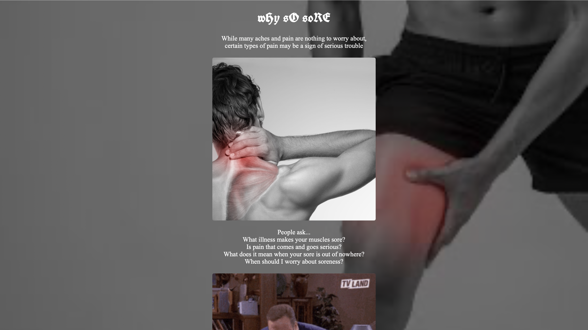
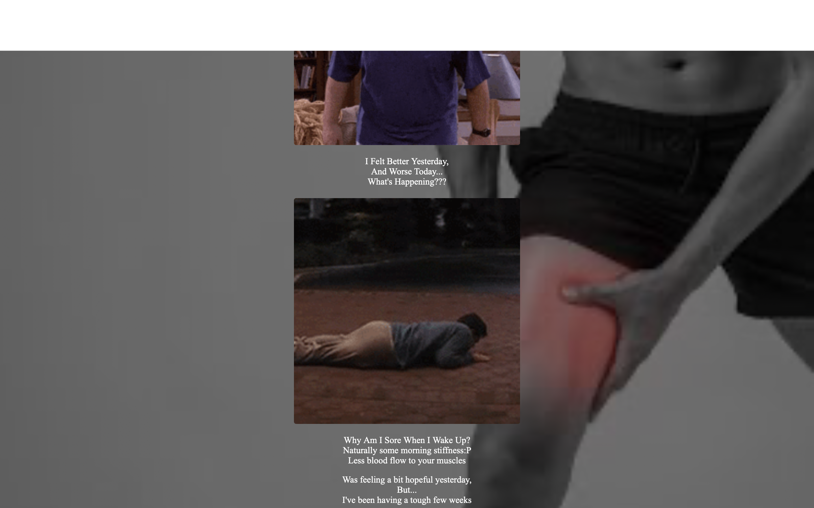

Project 1: wHy sO soRE Poem
For this project, I explored the concept of “uncreative writing” by creating a Flarf poem using
content generated from a Google search of why am I sore?. This was a phrase from a recent text message
I then edited and rearranged those search results to create a poem, focusing on randomness, internet language,
and the unexpected combinations.
I also downloaded four images from the same search results and used them as part of the
visual composition. Using HTML and CSS, I built a simple website page to present the poem and images together.
The goal of this project was to experiment with generative web art by using existing online content and transforming
it into something new through structure, design, and curation.

